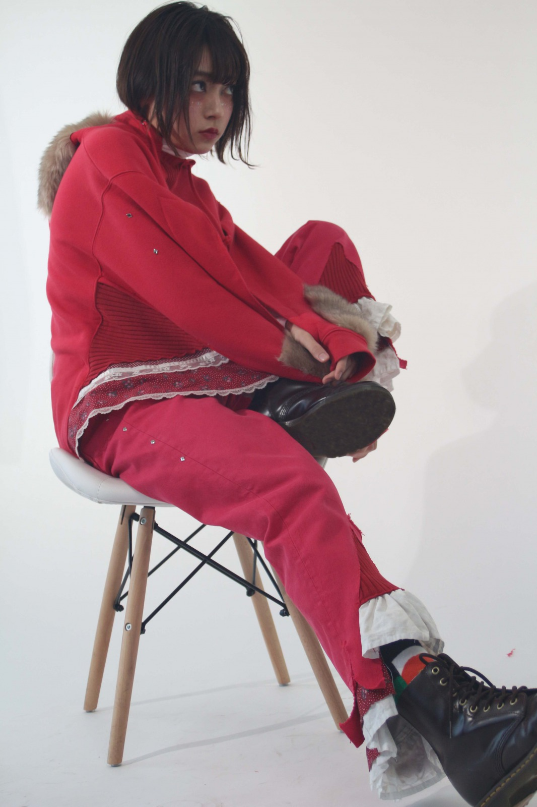
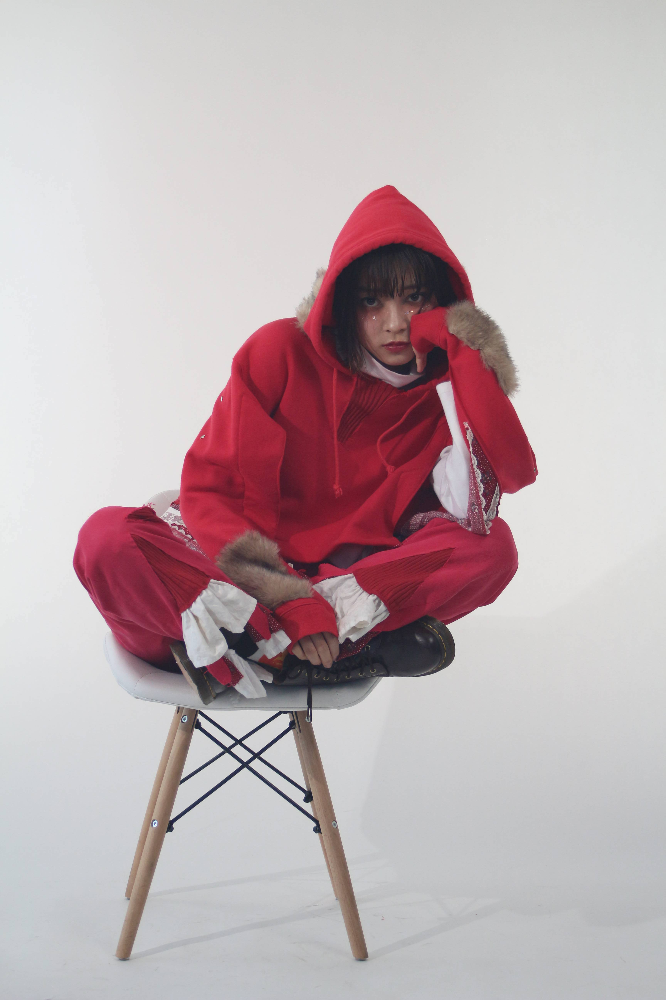
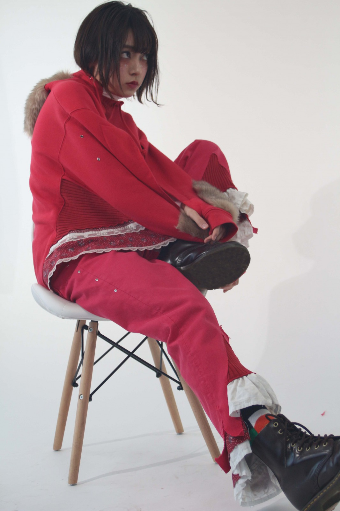
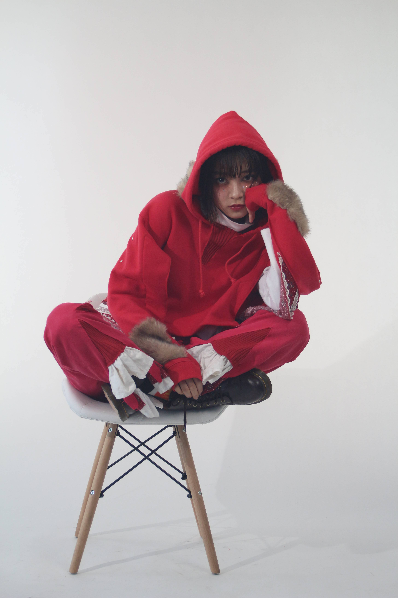

Hooded sweatshirt →Poncho
Skirt →Part of the poncho/Hem of pants
Ribbed Knit →Part of the poncho / Bare muscle pants such as pants
Fur vest →Food /Fur on sleeves,etc.
Turtleneck →Inner
Pants → Pants
Skirt →Poncho/ Part of the pants
テーマは狼の腹を裂いて生還した赤ずきんちゃんです。 そのため少女的なスカートは分解してトップスやパンツの裾に忍ばせました。 可愛らしい要素は残しつつ、傷つきながらも戦う女をイメージしています。